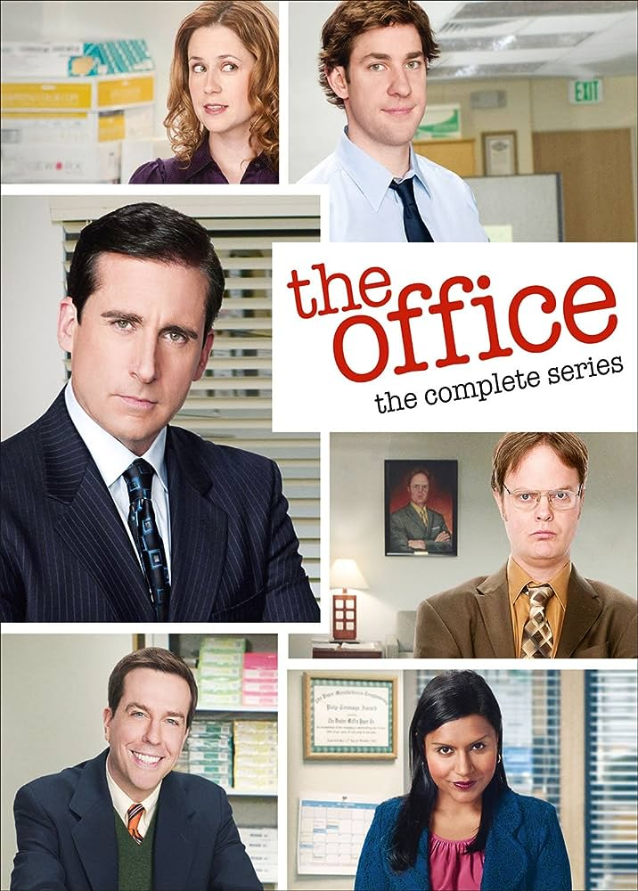

Séries
1 - The Office
Esta adaptação americana se passa em uma empresa de papel em Scranton, Pensilvânia, e tem um estilo de documentário semelhante ao original britânico estrelado por Ricky Gervais. A série mostra a equipe da Dunder-Mifflin, que inclui personagens baseados no original britânico (e, provavelmente, em pessoas com quem você trabalha em seu escritório).
Temos Jim, o simpático empregado que tem um pouco de todo homem. Ele sente uma atração pela recepcionista Pam, que foi promovida a representante de vendas (pois romances de escritório são sempre uma boa ideia).
Além disso, temos Dwight, o colega de trabalho bem-sucedido que carece de habilidades sociais e bom senso. E há ainda Ryan, ex-estagiário que trabalha temporariamente na matriz em Nova York antes de retornar a Scranton.

Trailer da serie:
Ficha Técnica
- Criação: Greg Daniels Ricky Gervais Stephen Merchant
- Lançamento: 2005-2013
- Temporadas: 9
- Duração: 22min
| Personagem |
Ator |
Aparições |
| Michael Scott |
Steve Carell |
142 episódios |
| Pam Beesly |
Jenna Fischer |
188 episódios |
| Jim Halpert |
John Krasinski |
188 episódios |
| Dwight Schrute |
Rainn Wilson |
188 episódios |
| Stanley Hudson |
Leslie David Baker |
188 episódios |
| Kevin Malone |
Brian Baumgartner |
188 episódios |
| Angela Martin |
Angela Kinsey |
188 episódios |
| Meredith Palmer |
Kate Flannety |
186 episódios |
| Phyllis Smith |
Phyllis Vance |
186 episódios |
| Creed Bratton |
Creed Bratton |
181 episódios |
| Oscar Martinez |
Oscar Nunez |
176 episódios |
| Ryan Howard |
B.J. Novak |
166 episódios |
| Kelly Kapoor |
Mindy Kaling |
158 episódios |
| Andy Bernard |
Ed Helms |
147 episódios |
| Toby Flenderson |
Paul Lieberstein |
137 episódios |
| Darryl Philbin |
Craig Robinson |
118 episódios |
| Erin Hannon |
Ellie Kemper |
102 episódios |
| Gabe Lewis |
Zach Woods |
51 episódios |
Link para página do IMDB
2 - How i met your mother
Ted se apaixonou. Tudo começou quando seu melhor amigo, Marshall, soltou a bomba de que planejava
pedir em casamento a namorada de longa data, Lily, uma professora de jardim de infância.
Ted percebeu que era melhor se mexer se esperava encontrar o verdadeiro amor.
Para ajudá-lo na missão está Barney, um amigo com opiniões sem fim -- e às vezes absurdas --,
uma queda por ternos e uma fórmula infalível para conhecer garotas.
Quando Ted conhece Robin, tem certeza que é amor à primeira vista,
mas o relacionamento esfria e se transforma em uma amizade.
Trailer da serie:
Ficha Técnica
- Criação: Carter Bays Craig Thomas
- Lançamento: 2005-2014
- Temporadas: 9
- Duração: 22min
| Personagem |
Ator |
Aparições |
| Ted Mosby |
Josh Radnor |
208 episódios |
| Marshall Eriksen |
Jason Segel |
208 episódios |
| Robin Scherbatsky |
Cobie Smulders |
208 episódios |
| Barney Stinson |
Neil Patrick Harris |
208 episódios |
| Lily Aldrin |
Alyson Hannigan |
208 episódios |
| Tracy McConnel |
Cristin Milioti |
25 episódios |
Link para página do IMDB
3 - Doctor Who
A série acompanha Doctor, cientista de um planeta distante que viaja
no tempo a bordo da TARDIS, uma nave que muda sua forma de acordo com seus arredores.
Doctor também é capaz de alterar sua própria aparência.
Trailer da serie:
Ficha Técnica
- Criação: Sydney Newman
- Lançamento: 2005-atual
- Temporadas: 14
- Duração: 45min
| Personagem |
Ator |
Aparições |
| 10º Doutor |
David Tennant |
65 episódios |
| 11º Doutor |
Matt Smith |
58 episódios |
| 12º Doutor |
Peter Capaldi |
47 episódios |
| 13º Doutor |
Jodie Whittaker |
32 episódios |
| Clara |
Jenna Coleman |
40 episódios |
| Amy Pond |
Karen Gillan |
36 episódios |
Link para página do IMDB